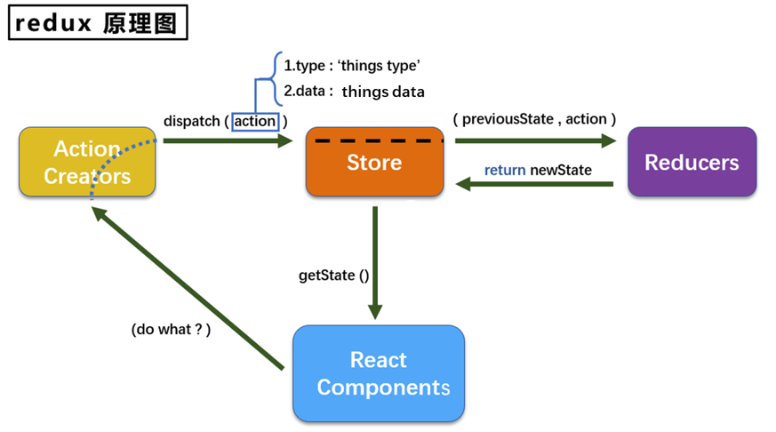
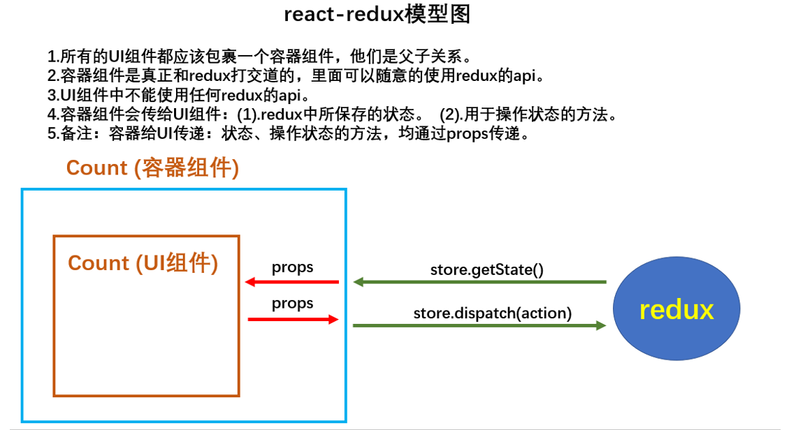
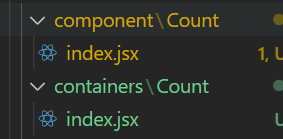
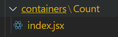
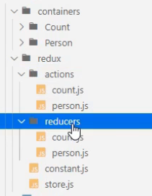

英文文档: https://redux.js.org/
中文文档: http://www.redux.org.cn/
Github: https://github.com/reactjs/redux
redux是一个专门用于做状态管理的JS库(不是react插件库)。
它可以用在react, angular, vue等项目中, 但基本与react配合使用。
作用: 集中式管理react应用中多个组件共享的状态。
某个组件的状态，需要让其他组件可以随时拿到（共享）。
一个组件需要改变另一个组件的状态（通信）。
总体原则：能不用就不用, 如果不用比较吃力才考虑使用。

动作的对象
包含2个属性
例子：{ type: 'ADD_STUDENT',data:{name: 'tom',age:18} }
将state、action、reducer联系在一起的对象
如何得到此对象?
此对象的功能?
(1).去除Count组件自身的状态，可以保留自己私有的state
(2).src下建立;
-redux
(3).store.js:
xxxxxxxxxx61// 引入createStore,专门用于创建最为核心的store对象2import {createStore} from 'redux';3//引入count组件服务的reducer4import countReducer from './count_reducer'5// 暴露store6export default createStore(countReducer)(4).count_reducer.js:
1).reducer的本质是一个函数，接收: preState,action，返回加工后的状态
2).reducer有两个作用:初始化状态，加工状态
3 ).reducer被第一次调用时，是store自动触发的，
xxxxxxxxxx161/**2 * 该文件用于创建一个reducer,本质是一个函数3 * 参数为：preState前一个状态, action动作对象4 */5const initState = 0 // 初始化状态6export default function countReducer(preState=initState, action) {7 const {type, data} = action8 switch (type) {9 case 'increment':10 return preState + data11 case 'decrement':12 return preState - data13 default:14 return preState15 }16}(5).在index.js中监测store中状态的改变，一旦发生改变重新渲染
备注: redux只负责管理状态，至于状态的改变驱动着页面的展示，要靠我们自己写。
xxxxxxxxxx251import React from "react";2import ReactDOM from "react-dom";3import "./index.css";4import App from "./App";5import reportWebVitals from "./reportWebVitals";6import store from './redux/store'7
8ReactDOM.render(9 <React.StrictMode>10 <App />11 </React.StrictMode>,12 document.getElementById("root")13); 14
15// 全局订阅redux，其实就是如果状态更新，就全部重新刷新页面16store.subscribe(() => {17 ReactDOM.render(18 <React.StrictMode>19 <App />20 </React.StrictMode>,21 document.getElementById("root")22 ); 23})24reportWebVitals();25
使用
xxxxxxxxxx51// 获取状态2const count = store.getState()3// 分发任务，修改状态4store.dispatch({type: 'increment', data:value*1})5
新增文件:
xxxxxxxxxx131/**2 * 专门为count组件生成action3 */4import {INCREMENT, DECREMENT} from './constant'5export const createIncrementAction = data => ({6 type: INCREMENT,7 data8})9
10export const createDecrementAction = data => ({11 type: DECREMENT,12 data13})xxxxxxxxxx51/**2 * 定义action对象中type类型的常量值3 */4export const INCREMENT = 'increment'5export const DECREMENT = 'decrement'其余的地方就可以用这个代替
使用
xxxxxxxxxx41// 获取状态2const count = store.getState()3// 改变状态4store.dispatch(createIncrementAction(value*1))
异步和同步是说action的类型是什么，同步是对象，异步是函数
(1).明确:延迟的动作不想交给组件自身，想交给action
(2) .何时需要异步action:想要对状态进行操作，但是具体的数据靠异步任务返回(非必须)。
(3).具体编码:
npm install redux-thunk， 并配置在store中xxxxxxxxxx81// 引入createStore,专门用于创建最为核心的store对象2import {createStore, applyMiddleware} from 'redux';3//引入count组件服务的reducer4import countReducer from './count_reducer'5// 引入redun-thunk,用来指出异步action,并且需要applyMiddleware支持6import thunk from 'redux-thunk'7// 暴露store8export default createStore(countReducer, applyMiddleware(thunk))xxxxxxxxxx91// 异步action返回值为函数,异步action中一般都会调用同步action2export const createIncrementAsyncAction = (data, time) => {3 // 这个函数本身就是store调用，所以可以直接传一个dispatch参数，不需要单独引入store了 4 return (dispatch) => {5 setTimeout(() => {6 dispatch(createIncrementAction(data))7 }, time);8 }9}xxxxxxxxxx21store.dispatch(createIncrementAsyncAction(value*1, 500))2// store.dispatch({type: 'increment', data:value*1}) 可以换成上面那种写法了备注:异步action不是必须要写的，完全可以自己等待异步任务的结果了再去分发同步action。


(1).明确两个概念:
xxxxxxxxxx411import React, { Component } from 'react'2
3export class Count extends Component {4
5 increment = ()=>{6 const {value} = this.selectNumber7 // 就直接调用容器组件传过来的方法就可以8 this.props.increment(value*1)9 }10 decrement = ()=>{11 const {value} = this.selectNumber12 this.props.decrement(value*1)13 }14 incrementIfOdd = () => {15 const {value} = this.selectNumber16
17 }18 incrementAsync = () => {19 const {value} = this.selectNumber20 this.props.incrementAsync(value*1, 500)21 }22
23 render() {24 return (25 <div>26 <h1>当前求和为:{this.props.count}</ h1>27 <select ref={c => this.selectNumber = c}>28 <option value="1">1</option>29 <option value="2">2</option>30 <option value="3">3</option>31 </select> 32 <button onClick={this.increment}>+</button> 33 <button onClick={this.decrement}>-</button> 34 <button onClick={this.incrementIfOdd}>当前求和为奇数再加</button> 35 <button onClick={this.incrementAsync}>异步加</button> 36 </div>37 )38 }39}40
41export default Countxxxxxxxxxx451import CountUI from "../../component/Count";2// 这个不能自己引入，需要传props3// import store from '../../redux/store'4
5// 引入connct用于连接UI组件和redux6import { connect } from "react-redux";7
8import {9 createIncrementAction,10 createDecrementAction,11 createIncrementAsyncAction,12} from "../../redux/count_action";13
14/*151.mapStateToProps函数返回的是一个对象;162.返回的对象中的key就作为传递给UI组件props的key,value就作为传递给UI组件props的value173.mapStateToProps用于传递状态18*/19function mapStateToProps(state) {20 return { count: state };21}22
23/*241.mapDispatchToProps函数返回的是一个对象;252.返回的对象中的key就作为传递UI组件props的key, value就作为传递给UI组件props的value263.mapDispatchToProps用于传递操作状态的方法27*/28// function mapDispatchToProps(dispatch) {29// return {30// increment: (number) => dispatch(createIncrementAction(number)),31// decrement: (number) => dispatch(createDecrementAction(number)),32// incrementAsync: (number, time) =>33// dispatch(createIncrementAsyncAction(number, time)),34// };35// }36
37// 简写形式，第二个参数mapDispatchToProps可以是一个对象38const mapDispatchToProps = {39 increment: createIncrementAction,40 decrement: createDecrementAction,41 incrementAsync: createIncrementAsyncAction,42}43
44export default connect(mapStateToProps, mapDispatchToProps)(CountUI);45
(2).如何创建一个容器组件--靠react-redux 的connect函数
(3).备注:容器组件中的store是靠props传进去的，而不是在容器组件中直接引入
xxxxxxxxxx101import Count from './containers/Count';2import store from './redux/store';3// app.js中就只需要引入容器组件，并且传入store即可4render() {5 return (6 <div>7 <Count store={store}></Count>8 </div>9 )10}(4).备注2: mapDispatchToProps，也可以是一个对象
用了react-redux之后，index.js就不需要监听状态改变了，它会自动检测
此外，也不需要为每一个容器组件分别添加，store属性，直接用Provider包裹App组件，就能自动进行传递
xxxxxxxxxx81ReactDOM.render(2 <React.StrictMode>3 <Provider store={store}>4 <App /> 5 </Provider>6 </React.StrictMode>,7 document.getElementById("root")8); 下一个优化，
将UI组件和容器组件进行文件合并，因为最终暴露的是容器组件，UI组件只是给容器组件使用，所以可以在容器组件中直接定义UI组件，没必要单独定义了
最终只需要一个container组件

xxxxxxxxxx601// 引入connect用于连接UI组件和redux2import { connect } from "react-redux";3import {4 createIncrementAction,5 createDecrementAction,6 createIncrementAsyncAction,7} from "../../redux/count_action";8import React, { Component } from 'react'9
10class Count extends Component {11
12 increment = ()=>{13 const {value} = this.selectNumber14 this.props.increment(value*1)15 }16 decrement = ()=>{17 const {value} = this.selectNumber18 this.props.decrement(value*1)19 }20 incrementIfOdd = () => {21 const {value} = this.selectNumber22
23 }24 incrementAsync = () => {25 const {value} = this.selectNumber26 this.props.incrementAsync(value*1, 500)27 }28
29 render() {30 return (31 <div>32 <h1>当前求和为:{this.props.count}</ h1>33 <select ref={c => this.selectNumber = c}>34 <option value="1">1</option>35 <option value="2">2</option>36 <option value="3">3</option>37 </select> 38 <button onClick={this.increment}>+</button> 39 <button onClick={this.decrement}>-</button> 40 <button onClick={this.incrementIfOdd}>当前求和为奇数再加</button> 41 <button onClick={this.incrementAsync}>异步加</button> 42 </div>43 )44 }45}46
47// 可以优化为箭头函数48function mapStateToProps(state) {49 return { count: state };50}51
52// 简写形式，可以是一个对象53const mapDispatchToProps = {54 increment: createIncrementAction,55 decrement: createDecrementAction,56 incrementAsync: createIncrementAsyncAction,57}58
59// 可以优化为直接将函数和对象填入，不需要定义一个变凉了60export default connect(mapStateToProps, mapDispatchToProps)(Count);
项目结构优化：

重点: 每个组件的Reducer要使用combineReducers进行合并，合并后的总状态是一个对象
交给store的是总reducer，并且connect连接UI组件和容器组件时，用到的state是总state，所以需要注意取state时，注意对象取值。
组件的定义互不影响，只是需要在store.js中进行合并
xxxxxxxxxx141//引入为Count组件服务的reducer2import countReducer from './reducers/count'3//引入为Count组件服务的reducer4import personReducer from './reducers/person'5//引入redux-thunk，用于支持异步action6import thunk from 'redux - thunk '7//汇总所有的reducer变为一个总的reducer8const allReducer = combineReducers({9 count: countReducer,10 allPerson: personReducer11 // 这里的属性名就是组件的state想要保存的数据的名称12})13//暴露store14export default createStore(allReducer, applyMiddleware(thunk))
一类特别的函数: 只要是同样的输入(实参)，必定得到同样的输出(返回)
必须遵守以下一些约束
redux的reducer函数必须是一个纯函数
所以对于preState的修改，不能使用数组的push、unshift等函数，使用解构赋值构建一个新的数组代替，这样会改变传过来的参数，导致状态改变了，但是页面不会刷新（这是因为react-redux是采用的浅比较，引用没变，所以相当于state没更新）
xxxxxxxxxx21preState.push(data) //错误2[preState, data] // 正确理解: 一类特别的函数
常见的高阶函数:
作用: 能实现更加动态, 更加可扩展的功能